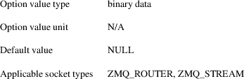
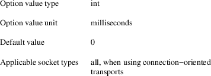
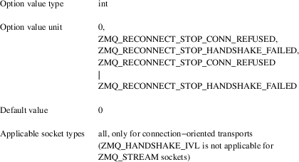
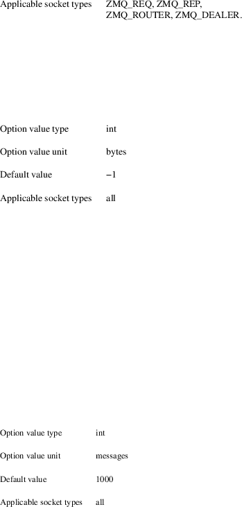
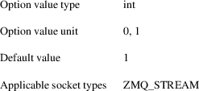
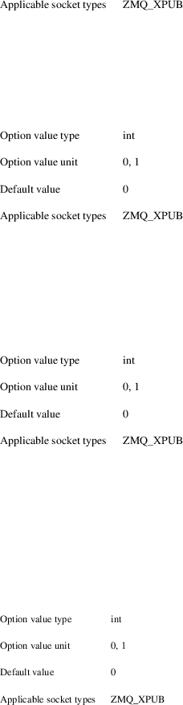

zmq_setsockopt − set 0MQ socket options
int zmq_setsockopt (void *socket, int option_name, const void *option_value, size_t option_len);
Caution: All options, with the exception of ZMQ_SUBSCRIBE, ZMQ_UNSUBSCRIBE, ZMQ_LINGER, ZMQ_ROUTER_HANDOVER, ZMQ_ROUTER_MANDATORY, ZMQ_PROBE_ROUTER, ZMQ_XPUB_VERBOSE, ZMQ_XPUB_VERBOSER, ZMQ_REQ_CORRELATE, ZMQ_REQ_RELAXED, ZMQ_SNDHWM and ZMQ_RCVHWM, only take effect for subsequent socket bind/connects.
Specifically, security options take effect for subsequent bind/connect calls, and can be changed at any time to affect subsequent binds and/or connects.
The zmq_setsockopt() function shall set the option specified by the option_name argument to the value pointed to by the option_value argument for the 0MQ socket pointed to by the socket argument. The option_len argument is the size of the option value in bytes. For options taking a value of type "character string", the provided byte data should either contain no zero bytes, or end in a single zero byte (terminating ASCII NUL character).
The following socket options can be set with the zmq_setsockopt() function:
ZMQ_AFFINITY:
Set I/O thread affinity
The ZMQ_AFFINITY option shall set the I/O thread
affinity for newly created connections on the specified
socket.
Affinity determines which threads from the 0MQ I/O thread pool associated with the socket’s context shall handle newly created connections. A value of zero specifies no affinity, meaning that work shall be distributed fairly among all 0MQ I/O threads in the thread pool. For non−zero values, the lowest bit corresponds to thread 1, second lowest bit to thread 2 and so on. For example, a value of 3 specifies that subsequent connections on socket shall be handled exclusively by I/O threads 1 and 2.
See also zmq_init(3) for details on allocating the number of I/O threads for a specific context.
ZMQ_BACKLOG:
Set maximum length of the queue of outstanding
connections
The ZMQ_BACKLOG option shall set the maximum length
of the queue of outstanding peer connections for the
specified socket; this only applies to
connection−oriented transports. For details refer to
your operating system documentation for the listen
function.
ZMQ_BINDTODEVICE:
Set name of device to bind the socket to
The ZMQ_BINDTODEVICE option binds this socket to a
particular device, eg. an interface or VRF. If a socket is
bound to an interface, only packets received from that
particular interface are processed by the socket. If device
is a VRF device, then subsequent binds/connects to that
socket use addresses in the VRF routing table.
Note
requires setting CAP_NET_RAW on the compiled program.
ZMQ_CONNECT_RID:
Assign the next outbound connection id
This option name is now deprecated. Use
ZMQ_CONNECT_ROUTING_ID instead. ZMQ_CONNECT_RID remains as
an alias for now.
ZMQ_CONNECT_ROUTING_ID:
Assign the next outbound routing id
The ZMQ_CONNECT_ROUTING_ID option sets the peer id of
the peer connected via the next zmq_connect() call, such
that that connection is immediately ready for data transfer
with the given routing id. This option applies only to the
first subsequent call to zmq_connect(), zmq_connect() calls
thereafter use the default connection behaviour.
Typical use is to set this socket option ahead of each zmq_connect() call. Each connection MUST be assigned a unique routing id. Assigning a routing id that is already in use is not allowed.
Useful when connecting ROUTER to ROUTER, or STREAM to STREAM, as it allows for immediate sending to peers. Outbound routing id framing requirements for ROUTER and STREAM sockets apply.
The routing id must be from 1 to 255 bytes long and MAY NOT start with a zero byte (such routing ids are reserved for internal use by the 0MQ infrastructure).

ZMQ_CONFLATE:
Keep only last message
If set, a socket shall keep only one message in its
inbound/outbound queue, this message being the last message
received/the last message to be sent. Ignores
ZMQ_RCVHWM and ZMQ_SNDHWM options. Does not
support multi−part messages, in particular, only one
part of it is kept in the socket internal queue.
Note
If recv is not called on the inbound socket, the queue and
memory will grow with each message received. Use
zmq_getsockopt(3) with ZMQ_EVENTS to trigger the
conflation of the messages.
ZMQ_CONNECT_TIMEOUT:
Set connect() timeout
Sets how long to wait before timing−out a connect()
system call. The connect() system call normally takes a long
time before it returns a time out error. Setting this option
allows the library to time out the call at an earlier
interval.
ZMQ_CURVE_PUBLICKEY:
Set CURVE public key
Sets the socket’s long term public key. You must set
this on CURVE client sockets, see zmq_curve(7). You
can provide the key as 32 binary bytes, or as a
40−character string encoded in the Z85 encoding format
and terminated in a null byte. The public key must always be
used with the matching secret key. To generate a
public/secret key pair, use zmq_curve_keypair(3). To
derive the public key from a secret key, use
zmq_curve_public(3).
Note
an option value size of 40 is supported for backwards
compatibility, though is deprecated.
ZMQ_CURVE_SECRETKEY:
Set CURVE secret key
Sets the socket’s long term secret key. You must set
this on both CURVE client and server sockets, see
zmq_curve(7). You can provide the key as 32 binary
bytes, or as a 40−character string encoded in the Z85
encoding format and terminated in a null byte. To generate a
public/secret key pair, use zmq_curve_keypair(3). To
derive the public key from a secret key, use
zmq_curve_public(3).
Note
an option value size of 40 is supported for backwards
compatibility, though is deprecated.
ZMQ_CURVE_SERVER:
Set CURVE server role
Defines whether the socket will act as server for CURVE
security, see zmq_curve(7). A value of 1 means
the socket will act as CURVE server. A value of 0
means the socket will not act as CURVE server, and its
security role then depends on other option settings. Setting
this to 0 shall reset the socket security to NULL.
When you set this you must also set the server’s
secret key using the ZMQ_CURVE_SECRETKEY option. A server
socket does not need to know its own public
key.

ZMQ_CURVE_SERVERKEY:
Set CURVE server key
Sets the socket’s long term server key. You must set
this on CURVE client sockets, see zmq_curve(7). You
can provide the key as 32 binary bytes, or as a
40−character string encoded in the Z85 encoding format
and terminated in a null byte. This key must have been
generated together with the server’s secret key. To
generate a public/secret key pair, use
zmq_curve_keypair(3).
Note
an option value size of 40 is supported for backwards
compatibility, though is
deprecated.
ZMQ_DISCONNECT_MSG:
set a disconnect message that the socket will generate when
accepted peer disconnect
When set, the socket will generate a disconnect message when
accepted peer has been disconnected. You may set this on
ROUTER, SERVER and PEER sockets. The combination with
ZMQ_HEARTBEAT_IVL is powerful and simplify protocols, when
heartbeat recognize a connection drop it will generate a
disconnect message that can match the protocol of the
application.
ZMQ_GSSAPI_PLAINTEXT:
Disable GSSAPI encryption
Defines whether communications on the socket will be
encrypted, see zmq_gssapi(7). A value of 1
means that communications will be plaintext. A value of
0 means communications will be
encrypted.
ZMQ_GSSAPI_PRINCIPAL:
Set name of GSSAPI principal
Sets the name of the principal for whom GSSAPI credentials
should be acquired.

ZMQ_GSSAPI_SERVER:
Set GSSAPI server role
Defines whether the socket will act as server for GSSAPI
security, see zmq_gssapi(7). A value of 1
means the socket will act as GSSAPI server. A value of
0 means the socket will act as GSSAPI
client.
ZMQ_GSSAPI_SERVICE_PRINCIPAL:
Set name of GSSAPI service principal
Sets the name of the principal of the GSSAPI server to which
a GSSAPI client intends to
connect.
ZMQ_GSSAPI_SERVICE_PRINCIPAL_NAMETYPE:
Set name type of service principal
Sets the name type of the GSSAPI service principal. A value
of ZMQ_GSSAPI_NT_HOSTBASED (0) means the name
specified with ZMQ_GSSAPI_SERVICE_PRINCIPAL is
interpreted as a host based name. A value of
ZMQ_GSSAPI_NT_USER_NAME (1) means it is interpreted
as a local user name. A value of
ZMQ_GSSAPI_NT_KRB5_PRINCIPAL (2) means it is
interpreted as an unparsed principal name string (valid only
with the krb5 GSSAPI
mechanism).
ZMQ_GSSAPI_PRINCIPAL_NAMETYPE:
Set name type of principal
Sets the name type of the GSSAPI principal. A value of
ZMQ_GSSAPI_NT_HOSTBASED (0) means the name specified
with ZMQ_GSSAPI_PRINCIPAL is interpreted as a host
based name. A value of ZMQ_GSSAPI_NT_USER_NAME (1)
means it is interpreted as a local user name. A value of
ZMQ_GSSAPI_NT_KRB5_PRINCIPAL (2) means it is
interpreted as an unparsed principal name string (valid only
with the krb5 GSSAPI
mechanism).
ZMQ_HANDSHAKE_IVL:
Set maximum handshake interval
The ZMQ_HANDSHAKE_IVL option shall set the maximum
handshake interval for the specified socket.
Handshaking is the exchange of socket configuration
information (socket type, routing id, security) that occurs
when a connection is first opened, only for
connection−oriented transports. If handshaking does
not complete within the configured time, the connection
shall be closed. The value 0 means no handshake time
limit.

ZMQ_HELLO_MSG:
set an hello message that will be sent when a new peer
connect
When set, the socket will automatically send an hello
message when a new connection is made or accepted. You may
set this on DEALER, ROUTER, CLIENT, SERVER and PEER sockets.
The combination with ZMQ_HEARTBEAT_IVL is powerful and
simplify protocols, as now heartbeat and sending the hello
message can be left out of protocols and be handled by
zeromq.
ZMQ_HEARTBEAT_IVL:
Set interval between sending ZMTP heartbeats
The ZMQ_HEARTBEAT_IVL option shall set the interval
between sending ZMTP heartbeats for the specified
socket. If this option is set and is greater than 0,
then a PING ZMTP command will be sent every
ZMQ_HEARTBEAT_IVL
milliseconds.

ZMQ_HEARTBEAT_TIMEOUT:
Set timeout for ZMTP heartbeats
The ZMQ_HEARTBEAT_TIMEOUT option shall set how long
to wait before timing−out a connection after sending a
PING ZMTP command and not receiving any traffic. This
option is only valid if ZMQ_HEARTBEAT_IVL is also
set, and is greater than 0. The connection will time out if
there is no traffic received after sending the PING
command, but the received traffic does not have to be a
PONG command − any received traffic will cancel
the timeout.
ZMQ_HEARTBEAT_TTL:
Set the TTL value for ZMTP heartbeats
The ZMQ_HEARTBEAT_TTL option shall set the timeout on
the remote peer for ZMTP heartbeats. If this option is
greater than 0, the remote side shall time out the
connection if it does not receive any more traffic within
the TTL period. This option does not have any effect if
ZMQ_HEARTBEAT_IVL is not set or is 0. Internally,
this value is rounded down to the nearest decisecond, any
value less than 100 will have no
effect.
ZMQ_IDENTITY:
Set socket identity
This option name is now deprecated. Use ZMQ_ROUTING_ID
instead. ZMQ_IDENTITY remains as an alias for
now.
ZMQ_IMMEDIATE:
Queue messages only to completed connections
By default queues will fill on outgoing connections even if
the connection has not completed. This can lead to
"lost" messages on sockets with round−robin
routing (REQ, PUSH, DEALER). If this option is set to 1,
messages shall be queued only to completed connections. This
will cause the socket to block if there are no other
connections, but will prevent queues from filling on pipes
awaiting connection.
ZMQ_INVERT_MATCHING:
Invert message filtering
Reverses the filtering behavior of PUB−SUB sockets,
when set to 1.
On PUB and XPUB sockets, this causes messages to be sent to all connected sockets except those subscribed to a prefix that matches the message. On SUB sockets, this causes only incoming messages that do not match any of the socket’s subscriptions to be received by the user.
Whenever ZMQ_INVERT_MATCHING is set to 1 on a PUB socket, all SUB sockets connecting to it must also have the option set to 1. Failure to do so will have the SUB sockets reject everything the PUB socket sends them. XSUB sockets do not need to do this because they do not filter incoming messages.
ZMQ_IPV6:
Enable IPv6 on socket
Set the IPv6 option for the socket. A value of 1 means IPv6
is enabled on the socket, while 0 means the socket will use
only IPv4. When IPv6 is enabled the socket will connect to,
or accept connections from, both IPv4 and IPv6
hosts.
ZMQ_LINGER:
Set linger period for socket shutdown
The ZMQ_LINGER option shall set the linger period for
the specified socket. The linger period determines
how long pending messages which have yet to be sent to a
peer shall linger in memory after a socket is disconnected
with zmq_disconnect(3) or closed with
zmq_close(3), and further affects the termination of
the socket’s context with zmq_ctx_term(3). The
following outlines the different
behaviours:
• A value of −1 specifies an infinite linger period. Pending messages shall not be discarded after a call to zmq_disconnect() or zmq_close(); attempting to terminate the socket’s context with zmq_ctx_term() shall block until all pending messages have been sent to a peer.
• The value of 0 specifies no linger period. Pending messages shall be discarded immediately after a call to zmq_disconnect() or zmq_close().
• Positive values specify an upper bound for the linger period in milliseconds. Pending messages shall not be discarded after a call to zmq_disconnect() or zmq_close(); attempting to terminate the socket’s context with zmq_ctx_term() shall block until either all pending messages have been sent to a peer, or the linger period expires, after which any pending messages shall be discarded.
ZMQ_MAXMSGSIZE:
Maximum acceptable inbound message size
Limits the size of the inbound message. If a peer sends a
message larger than ZMQ_MAXMSGSIZE it is disconnected. Value
of −1 means no
limit.
ZMQ_METADATA:
Add application metadata properties to a socket
The ZMQ_METADATA option shall add application
metadata to the specified socket, the metadata is
exchanged with peers during connection setup. A metadata
property is specfied as a string, delimited by a colon,
starting with the metadata property followed by the
metadata value, for example "X−key:value".
Property names are restrited to maximum 255
characters and must be prefixed by "X−".
Multiple application metadata properties can be added to a
socket by executing zmq_setsockopt() multiple times. As the
argument is a null−terminated string, binary data must
be encoded before it is added e.g. using Z85
(zmq_z85_encode(3)).
Note
in DRAFT state, not yet available in stable
releases.
ZMQ_MULTICAST_HOPS:
Maximum network hops for multicast packets
Sets the time−to−live field in every multicast
packet sent from this socket. The default is 1 which means
that the multicast packets don’t leave the local
network.
ZMQ_MULTICAST_MAXTPDU:
Maximum transport data unit size for multicast packets
Sets the maximum transport data unit size used for outbound
multicast packets.
This must be set at or below the minimum Maximum Transmission Unit (MTU) for all network paths over which multicast reception is required.

ZMQ_PLAIN_PASSWORD:
Set PLAIN security password
Sets the password for outgoing connections over TCP or IPC.
If you set this to a non−null value, the security
mechanism used for connections shall be PLAIN, see
zmq_plain(7). If you set this to a null value, the
security mechanism used for connections shall be NULL, see
zmq_null(3).
ZMQ_PLAIN_SERVER:
Set PLAIN server role
Defines whether the socket will act as server for PLAIN
security, see zmq_plain(7). A value of 1 means
the socket will act as PLAIN server. A value of 0
means the socket will not act as PLAIN server, and its
security role then depends on other option settings. Setting
this to 0 shall reset the socket security to
NULL.
ZMQ_PLAIN_USERNAME:
Set PLAIN security username
Sets the username for outgoing connections over TCP or IPC.
If you set this to a non−null value, the security
mechanism used for connections shall be PLAIN, see
zmq_plain(7). If you set this to a null value, the
security mechanism used for connections shall be NULL, see
zmq_null(3).
ZMQ_USE_FD:
Set the pre−allocated socket file descriptor
When set to a positive integer value before zmq_bind is
called on the socket, the socket shall use the corresponding
file descriptor for connections over TCP or IPC instead of
allocating a new file descriptor. Useful for writing systemd
socket activated services. If set to −1 (default), a
new file descriptor will be allocated instead (default
behaviour).
Note
if set after calling zmq_bind, this option shall have no
effect. NOTE: the file descriptor passed through MUST have
been ran through the "bind" and "listen"
system calls beforehand. Also, socket option that would
normally be passed through zmq_setsockopt like TCP buffers
length, IP_TOS or SO_REUSEADDR MUST be set beforehand by the
caller, as they must be set before the socket is
bound.
ZMQ_PRIORITY:
Set the Priority on socket
Sets the protocol−defined priority for all packets to
be sent on this socket, where supported by the OS. In Linux,
values greater than 6 require admin capability
(CAP_NET_ADMIN)
ZMQ_PROBE_ROUTER:
bootstrap connections to ROUTER sockets
When set to 1, the socket will automatically send an empty
message when a new connection is made or accepted. You may
set this on REQ, DEALER, or ROUTER sockets connected to a
ROUTER socket. The application must filter such empty
messages. The ZMQ_PROBE_ROUTER option in effect provides the
ROUTER application with an event signaling the arrival of a
new peer.
Note
do not set this option on a socket that talks to any other
socket types: the results are
undefined.
ZMQ_RATE:
Set multicast data rate
The ZMQ_RATE option shall set the maximum send or
receive data rate for multicast transports such as
zmq_pgm(7) using the specified
socket.
ZMQ_RCVBUF:
Set kernel receive buffer size
The ZMQ_RCVBUF option shall set the underlying kernel
receive buffer size for the socket to the specified
size in bytes. A value of −1 means leave the OS
default unchanged. For details refer to your operating
system documentation for the SO_RCVBUF socket
option.
ZMQ_RCVHWM:
Set high water mark for inbound messages
The ZMQ_RCVHWM option shall set the high water mark
for inbound messages on the specified socket. The
high water mark is a hard limit on the maximum number of
outstanding messages 0MQ shall queue in memory for any
single peer that the specified socket is
communicating with. A value of zero means no
limit.
If this limit has been reached the socket shall enter an exceptional state and depending on the socket type, 0MQ shall take appropriate action such as blocking or dropping sent messages. Refer to the individual socket descriptions in zmq_socket(3) for details on the exact action taken for each socket type.
Note
0MQ does not guarantee that the socket will be able to queue
as many as ZMQ_RCVHWM messages, and the actual limit may be
lower or higher, depending on socket transport. A notable
example is for sockets using TCP transport; see
zmq_tcp(7).

ZMQ_RCVTIMEO:
Maximum time before a recv operation returns with
EAGAIN
Sets the timeout for receive operation on the socket. If the
value is 0, zmq_recv(3) will return immediately, with
a EAGAIN error if there is no message to receive. If the
value is −1, it will block until a message is
available. For all other values, it will wait for a message
for that amount of time before returning with an EAGAIN
error.
ZMQ_RECONNECT_IVL:
Set reconnection interval
The ZMQ_RECONNECT_IVL option shall set the initial
reconnection interval for the specified socket. The
reconnection interval is the period 0MQ shall wait between
attempts to reconnect disconnected peers when using
connection−oriented transports. The value −1
means no
reconnection.
Note
The reconnection interval may be randomized by 0MQ to
prevent reconnection storms in topologies with a large
number of peers per
socket.
ZMQ_RECONNECT_IVL_MAX:
Set maximum reconnection interval
The ZMQ_RECONNECT_IVL_MAX option shall set the
maximum reconnection interval for the specified
socket. This is the maximum period 0MQ shall wait
between attempts to reconnect. On each reconnect attempt,
the previous interval shall be doubled untill
ZMQ_RECONNECT_IVL_MAX is reached. This allows for
exponential backoff strategy. Default value means no
exponential backoff is performed and reconnect interval
calculations are only based on
ZMQ_RECONNECT_IVL.
Note
Values less than ZMQ_RECONNECT_IVL will be
ignored.
ZMQ_RECONNECT_STOP:
Set condition where reconnection will stop
The ZMQ_RECONNECT_STOP option shall set the
conditions under which automatic reconnection will stop.
This can be useful when a process binds to a wild−card
port, where the OS supplies an ephemeral
port.
The ZMQ_RECONNECT_STOP_CONN_REFUSED option will stop reconnection when 0MQ receives the ECONNREFUSED return code from the connect. This indicates that there is no code bound to the specified endpoint.
The ZMQ_RECONNECT_STOP_HANDSHAKE_FAILED option will stop reconnection if the 0MQ handshake fails. This can be used to detect and/or prevent errant connection attempts to non−0MQ sockets. Note that when specifying this option you may also want to set ZMQ_HANDSHAKE_IVL — the default handshake interval is 30000 (30 seconds), which is typically too large.
The ZMQ_RECONNECT_STOP_AFTER_DISCONNECT option will stop reconnection when zmq_disconnect() has been called. This can be useful when the user’s request failed (server not ready), as the socket does not need to continue to reconnect after user disconnect actively.
Note
in DRAFT state, not yet available in stable
releases.

ZMQ_RECOVERY_IVL:
Set multicast recovery interval
The ZMQ_RECOVERY_IVL option shall set the recovery
interval for multicast transports using the specified
socket. The recovery interval determines the maximum
time in milliseconds that a receiver can be absent from a
multicast group before unrecoverable data loss will
occur.
Caution
Exercise care when setting large recovery intervals as the
data needed for recovery will be held in memory. For
example, a 1 minute recovery interval at a data rate of
1Gbps requires a 7GB in−memory
buffer.
ZMQ_REQ_CORRELATE:
match replies with requests
The default behaviour of REQ sockets is to rely on the
ordering of messages to match requests and responses and
that is usually sufficient. When this option is set to 1,
the REQ socket will prefix outgoing messages with an extra
frame containing a request id. That means the full message
is (request id, 0, user frames...). The REQ socket will
discard all incoming messages that don’t begin with
these two
frames.

ZMQ_REQ_RELAXED:
relax strict alternation between request and reply
By default, a REQ socket does not allow initiating a new
request with zmq_send(3) until the reply to the
previous one has been received. When set to 1, sending
another message is allowed and previous replies will be
discarded if any. The request−reply state machine is
reset and a new request is sent to the next available
peer.
If set to 1, also enable ZMQ_REQ_CORRELATE to ensure correct matching of requests and replies. Otherwise a late reply to an aborted request can be reported as the reply to the superseding request.
ZMQ_ROUTER_HANDOVER:
handle duplicate client routing ids on ROUTER sockets
If two clients use the same routing id when connecting to a
ROUTER, the results shall depend on the ZMQ_ROUTER_HANDOVER
option setting. If that is not set (or set to the default of
zero), the ROUTER socket shall reject clients trying to
connect with an already−used routing id. If that
option is set to 1, the ROUTER socket shall hand−over
the connection to the new client and disconnect the existing
one.
ZMQ_ROUTER_MANDATORY:
accept only routable messages on ROUTER sockets
Sets the ROUTER socket behaviour when an unroutable message
is encountered. A value of 0 is the default and discards the
message silently when it cannot be routed or the peers
SNDHWM is reached. A value of 1 returns an
EHOSTUNREACH error code if the message cannot be
routed or EAGAIN error code if the SNDHWM is reached
and ZMQ_DONTWAIT was used. Without ZMQ_DONTWAIT it will
block until the SNDTIMEO is reached or a spot in the send
queue opens
up.
When ZMQ_ROUTER_MANDATORY is set to 1, ZMQ_POLLOUT events will be generated if one or more messages can be sent to at least one of the peers. If ZMQ_ROUTER_MANDATORY is set to 0, the socket will generate a ZMQ_POLLOUT event on every call to zmq_poll resp. zmq_poller_wait_all.
ZMQ_ROUTER_RAW:
switch ROUTER socket to raw mode
Sets the raw mode on the ROUTER, when set to 1. When the
ROUTER socket is in raw mode, and when using the tcp://
transport, it will read and write TCP data without 0MQ
framing. This lets 0MQ applications talk to non−0MQ
applications. When using raw mode, you cannot set explicit
identities, and the ZMQ_SNDMORE flag is ignored when sending
data messages. In raw mode you can close a specific
connection by sending it a zero−length message
(following the routing id
frame).
Note
This option is deprecated, please use ZMQ_STREAM sockets
instead.
ZMQ_ROUTING_ID:
Set socket routing id
The ZMQ_ROUTING_ID option shall set the routing id of
the specified socket when connecting to a ROUTER
socket.
A routing id must be at least one byte and at most 255 bytes long. Identities starting with a zero byte are reserved for use by the 0MQ infrastructure.
If two clients use the same routing id when connecting to a ROUTER, the results shall depend on the ZMQ_ROUTER_HANDOVER option setting. If that is not set (or set to the default of zero), the ROUTER socket shall reject clients trying to connect with an already−used routing id. If that option is set to 1, the ROUTER socket shall hand−over the connection to the new client and disconnect the existing one.

ZMQ_SNDBUF:
Set kernel transmit buffer size
The ZMQ_SNDBUF option shall set the underlying kernel
transmit buffer size for the socket to the specified
size in bytes. A value of −1 means leave the OS
default unchanged. For details please refer to your
operating system documentation for the SO_SNDBUF
socket
option.
ZMQ_SNDHWM:
Set high water mark for outbound messages
The ZMQ_SNDHWM option shall set the high water mark
for outbound messages on the specified socket. The
high water mark is a hard limit on the maximum number of
outstanding messages 0MQ shall queue in memory for any
single peer that the specified socket is
communicating with. A value of zero means no
limit.
If this limit has been reached the socket shall enter an exceptional state and depending on the socket type, 0MQ shall take appropriate action such as blocking or dropping sent messages. Refer to the individual socket descriptions in zmq_socket(3) for details on the exact action taken for each socket type.
Note
0MQ does not guarantee that the socket will accept as many
as ZMQ_SNDHWM messages, and the actual limit may be as much
as 90% lower depending on the flow of messages on the
socket. The socket may even be able to accept more messages
than the ZMQ_SNDHWM threshold; a notable example is for
sockets using TCP transport; see
zmq_tcp(7).
ZMQ_SNDTIMEO:
Maximum time before a send operation returns with
EAGAIN
Sets the timeout for send operation on the socket. If the
value is 0, zmq_send(3) will return immediately, with
a EAGAIN error if the message cannot be sent. If the value
is −1, it will block until the message is sent. For
all other values, it will try to send the message for that
amount of time before returning with an EAGAIN
error.
ZMQ_SOCKS_PROXY:
Set SOCKS5 proxy address
Sets the SOCKS5 proxy address that shall be used by the
socket for the TCP connection(s). Supported authentication
methods are: no authentication or basic authentication when
setup with ZMQ_SOCKS_USERNAME. If the endpoints are domain
names instead of addresses they shall not be resolved and
they shall be forwarded unchanged to the SOCKS proxy service
in the client connection request message (address type 0x03
domain
name).

ZMQ_SOCKS_USERNAME:
Set SOCKS username and select basic authentication
Sets the username for authenticated connection to the SOCKS5
proxy. If you set this to a non−null and
non−empty value, the authentication method used for
the SOCKS5 connection shall be basic authentication. In this
case, use ZMQ_SOCKS_PASSWORD option in order to set the
password. If you set this to a null value or empty value,
the authentication method shall be no authentication, the
default.

ZMQ_SOCKS_PASSWORD:
Set SOCKS basic authentication password
Sets the password for authenticating to the SOCKS5 proxy
server. This is used only when the SOCKS5 authentication
method has been set to basic authentication through the
ZMQ_SOCKS_USERNAME option. Setting this to a null value (the
default) is equivalent to an empty password
string.
ZMQ_STREAM_NOTIFY:
send connect and disconnect notifications
Enables connect and disconnect notifications on a STREAM
socket, when set to 1. When notifications are enabled, the
socket delivers a zero−length message when a peer
connects or
disconnects.

ZMQ_SUBSCRIBE:
Establish message filter
The ZMQ_SUBSCRIBE option shall establish a new
message filter on a ZMQ_SUB socket. Newly created
ZMQ_SUB sockets shall filter out all incoming
messages, therefore you should call this option to establish
an initial message
filter.
An empty option_value of length zero shall subscribe to all incoming messages. A non−empty option_value shall subscribe to all messages beginning with the specified prefix. Multiple filters may be attached to a single ZMQ_SUB socket, in which case a message shall be accepted if it matches at least one filter.
ZMQ_TCP_KEEPALIVE:
Override SO_KEEPALIVE socket option
Override SO_KEEPALIVE socket option (where supported
by OS). The default value of −1 means to skip any
overrides and leave it to OS
default.
ZMQ_TCP_KEEPALIVE_CNT:
Override TCP_KEEPCNT socket option
Override TCP_KEEPCNT socket option (where supported
by OS). The default value of −1 means to skip any
overrides and leave it to OS
default.

ZMQ_TCP_KEEPALIVE_IDLE:
Override TCP_KEEPIDLE (or TCP_KEEPALIVE on some OS)
Override TCP_KEEPIDLE (or TCP_KEEPALIVE on
some OS) socket option (where supported by OS). The default
value of −1 means to skip any overrides and leave it
to OS
default.
ZMQ_TCP_KEEPALIVE_INTVL:
Override TCP_KEEPINTVL socket option
Override TCP_KEEPINTVL socket option(where supported
by OS). The default value of −1 means to skip any
overrides and leave it to OS
default.

ZMQ_TCP_MAXRT:
Set TCP Maximum Retransmit Timeout
On OSes where it is supported, sets how long before an
unacknowledged TCP retransmit times out. The system normally
attempts many TCP retransmits following an exponential
backoff strategy. This means that after a network outage, it
may take a long time before the session can be
re−established. Setting this option allows the timeout
to happen at a shorter
interval.
ZMQ_TOS:
Set the Type−of−Service on socket
Sets the ToS fields (Differentiated services (DS) and
Explicit Congestion Notification (ECN) field of the IP
header. The ToS field is typically used to specify a packets
priority. The availability of this option is dependent on
intermediate network equipment that inspect the ToS field
and provide a path for low−delay,
high−throughput, highly−reliable service,
etc.
ZMQ_UNSUBSCRIBE:
Remove message filter
The ZMQ_UNSUBSCRIBE option shall remove an existing
message filter on a ZMQ_SUB socket. The filter
specified must match an existing filter previously
established with the ZMQ_SUBSCRIBE option. If the
socket has several instances of the same filter attached the
ZMQ_UNSUBSCRIBE option shall remove only one
instance, leaving the rest in place and
functional.
ZMQ_XPUB_VERBOSE:
pass duplicate subscribe messages on XPUB socket
Sets the XPUB socket behaviour on new duplicated
subscriptions. If enabled, the socket passes all subscribe
messages to the caller. If disabled, only the first
subscription to each filter will be passed. The default is 0
(disabled).

ZMQ_XPUB_VERBOSER:
pass duplicate subscribe and unsubscribe messages on XPUB
socket
Sets the XPUB socket behaviour on new duplicated
subscriptions and unsubscriptions. If enabled, the socket
passes all subscribe and unsubscribe messages to the caller.
If disabled, only the first subscription to each filter and
the last unsubscription from each filter will be passed. The
default is 0
(disabled).
ZMQ_XPUB_MANUAL:
change the subscription handling to manual
Sets the XPUB socket subscription handling mode
manual/automatic. A value of 0 is the default and
subscription requests will be handled automatically. A value
of 1 will change the subscription requests handling
to manual, with manual mode subscription requests are not
added to the subscription list. To add subscription the user
need to call setsockopt with ZMQ_SUBSCRIBE on XPUB
socket.

ZMQ_XPUB_MANUAL_LAST_VALUE:
change the subscription handling to manual
This option is similar to ZMQ_XPUB_MANUAL. The difference is
that ZMQ_XPUB_MANUAL_LAST_VALUE changes the XPUB
socket behaviour to send the first message to the last
subscriber after the socket receives a subscription and call
setsockopt with ZMQ_SUBSCRIBE on XPUB socket. This
prevents duplicated messages when using last value
caching(LVC).
Note
in DRAFT state, not yet available in stable
releases.
ZMQ_XPUB_NODROP:
do not silently drop messages if SENDHWM is
reached
Sets the XPUB socket behaviour to return error EAGAIN
if SENDHWM is reached and the message could not be
send.
A value of 0 is the default and drops the message silently when the peers SNDHWM is reached. A value of 1 returns an EAGAIN error code if the SNDHWM is reached and ZMQ_DONTWAIT was used.
ZMQ_XPUB_WELCOME_MSG:
set welcome message that will be received by subscriber when
connecting
Sets a welcome message the will be recieved by subscriber
when connecting. Subscriber must subscribe to the Welcome
message before connecting. Welcome message will also be sent
on reconnecting. For welcome message to work well user must
poll on incoming subscription messages on the XPUB socket
and handle
them.
Use NULL and length of zero to disable welcome message.
ZMQ_ONLY_FIRST_SUBSCRIBE:
Process only first subscribe/unsubscribe in a multipart
message
If set, only the first part of the multipart message is
processed as a subscribe/unsubscribe message. The rest are
forwarded as user data regardless of message
contents.
It not set (default), subscribe/unsubscribe messages in a multipart message are processed as such regardless of their number and order.
ZMQ_ZAP_DOMAIN:
Set RFC 27 authentication domain
Sets the domain for ZAP (ZMQ RFC 27) authentication. A ZAP
domain must be specified to enable authentication. When the
ZAP domain is empty, which is the default, ZAP
authentication is disabled. This is not compatible with
previous versions of libzmq, so it can be controlled by
ZMQ_ZAP_ENFORCE_DOMAIN which for now is disabled by default.
See
http://rfc.zeromq.org/spec:27
for more
details.
ZMQ_ZAP_ENFORCE_DOMAIN:
Set ZAP domain handling to strictly adhere the RFC
The ZAP (ZMQ RFC 27) authentication protocol specifies that
a domain must always be set. Older versions of libzmq did
not follow the spec and allowed an empty domain to be set.
This option can be used to enabled or disable the stricter,
backward incompatible behaviour. For now it is disabled by
default, but in a future version it will be enabled by
default.

ZMQ_TCP_ACCEPT_FILTER:
Assign filters to allow new TCP connections
Assign an arbitrary number of filters that will be applied
for each new TCP transport connection on a listening socket.
If no filters are applied, then the TCP transport allows
connections from any IP address. If at least one filter is
applied then new connection source ip should be matched. To
clear all filters call zmq_setsockopt(socket,
ZMQ_TCP_ACCEPT_FILTER, NULL, 0). Filter is a
null−terminated string with ipv6 or ipv4
CIDR.
Note
This option is deprecated, please use authentication via the
ZAP API and IP address allowing /
blocking.
ZMQ_IPC_FILTER_GID:
Assign group ID filters to allow new IPC
connections
Assign an arbitrary number of filters that will be applied
for each new IPC transport connection on a listening socket.
If no IPC filters are applied, then the IPC transport allows
connections from any process. If at least one UID, GID, or
PID filter is applied then new connection credentials should
be matched. To clear all GID filters call
zmq_setsockopt(socket, ZMQ_IPC_FILTER_GID, NULL,
0).
Note
GID filters are only available on platforms supporting
SO_PEERCRED or LOCAL_PEERCRED socket options (currently only
Linux and later versions of OS
X).
Note
This option is deprecated, please use authentication via the
ZAP API and IPC allowing /
blocking.
ZMQ_IPC_FILTER_PID:
Assign process ID filters to allow new IPC
connections
Assign an arbitrary number of filters that will be applied
for each new IPC transport connection on a listening socket.
If no IPC filters are applied, then the IPC transport allows
connections from any process. If at least one UID, GID, or
PID filter is applied then new connection credentials should
be matched. To clear all PID filters call
zmq_setsockopt(socket, ZMQ_IPC_FILTER_PID, NULL,
0).
Note
PID filters are only available on platforms supporting the
SO_PEERCRED socket option (currently only
Linux).
Note
This option is deprecated, please use authentication via the
ZAP API and IPC allowing /
blocking.
ZMQ_IPC_FILTER_UID:
Assign user ID filters to allow new IPC
connections
Assign an arbitrary number of filters that will be applied
for each new IPC transport connection on a listening socket.
If no IPC filters are applied, then the IPC transport allows
connections from any process. If at least one UID, GID, or
PID filter is applied then new connection credentials should
be matched. To clear all UID filters call
zmq_setsockopt(socket, ZMQ_IPC_FILTER_UID, NULL,
0).
Note
UID filters are only available on platforms supporting
SO_PEERCRED or LOCAL_PEERCRED socket options (currently only
Linux and later versions of OS
X).
Note
This option is deprecated, please use authentication via the
ZAP API and IPC allowing /
blocking.
ZMQ_IPV4ONLY:
Use IPv4−only on socket
Set the IPv4−only option for the socket. This option
is deprecated. Please use the ZMQ_IPV6
option.
ZMQ_VMCI_BUFFER_SIZE:
Set buffer size of the VMCI socket
The ZMQ_VMCI_BUFFER_SIZE option shall set the size of the
underlying buffer for the socket. Used during negotiation
before the connection is
established.
ZMQ_VMCI_BUFFER_MIN_SIZE:
Set min buffer size of the VMCI socket
The ZMQ_VMCI_BUFFER_MIN_SIZE option shall set the min size
of the underlying buffer for the socket. Used during
negotiation before the connection is
established.
ZMQ_VMCI_BUFFER_MAX_SIZE:
Set max buffer size of the VMCI socket
The ZMQ_VMCI_BUFFER_MAX_SIZE option shall set the max size
of the underlying buffer for the socket. Used during
negotiation before the connection is
established.

ZMQ_VMCI_CONNECT_TIMEOUT:
Set connection timeout of the VMCI socket
The ZMQ_VMCI_CONNECT_TIMEOUT option shall set connection
timeout for the
socket.
ZMQ_MULTICAST_LOOP:
Control multicast local loopback
For multicast UDP sender sockets this option sets whether
the data sent should be looped back on local listening
sockets.
ZMQ_ROUTER_NOTIFY:
Send connect and disconnect notifications
Enable connect and disconnect notifications on a ROUTER
socket. When enabled, the socket delivers a
zero−length message (with routing−id as first
frame) when a peer connects or disconnects. It’s
possible to notify both events for a peer by OR−ing
the flag values. This option only applies to stream oriented
(tcp, ipc)
transports.
Note
in DRAFT state, not yet available in stable
releases.
ZMQ_IN_BATCH_SIZE:
Maximal receive batch size
Sets the maximal amount of messages that can be received in
a single recv system call. WARNING: this option
should almost never be changed. The default has been chosen
to offer the best compromise between latency and
throughtput. In the vast majority of cases, changing this
option will result in worst result if not outright
breakages.
Cannot be zero.
Note
in DRAFT state, not yet available in stable
releases.
ZMQ_OUT_BATCH_SIZE:
Maximal send batch size
Sets the maximal amount of messages that can be sent in a
single send system call. WARNING: this option should
almost never be changed. The default has been chosen to
offer the best compromise between latency and throughtput.
In the vast majority of cases, changing this option will
result in worst result if not outright
breakages.
Cannot be zero.
Note
in DRAFT state, not yet available in stable
releases.

The zmq_setsockopt() function shall return zero if successful. Otherwise it shall return −1 and set errno to one of the values defined below.
EINVAL
The requested option option_name is unknown, or the requested option_len or option_value is invalid.
ETERM
The 0MQ context associated with the specified socket was terminated.
ENOTSOCK
The provided socket was invalid.
EINTR
The operation was interrupted by delivery of a signal.
Subscribing to messages on a ZMQ_SUB socket.
/*
Subscribe to all messages */
rc = zmq_setsockopt (socket, ZMQ_SUBSCRIBE, "",
0);
assert (rc == 0);
/* Subscribe to messages prefixed with
"ANIMALS.CATS" */
rc = zmq_setsockopt (socket, ZMQ_SUBSCRIBE,
"ANIMALS.CATS",
12);
Setting I/O thread affinity.
int64_t
affinity;
/* Incoming connections on TCP port 5555 shall be handled by
I/O thread 1 */
affinity = 1;
rc = zmq_setsockopt (socket, ZMQ_AFFINITY, &affinity,
sizeof (affinity));
assert (rc);
rc = zmq_bind (socket, "tcp://lo:5555");
assert (rc);
/* Incoming connections on TCP port 5556 shall be handled by
I/O thread 2 */
affinity = 2;
rc = zmq_setsockopt (socket, ZMQ_AFFINITY, &affinity,
sizeof (affinity));
assert (rc);
rc = zmq_bind (socket, "tcp://lo:5556");
assert
(rc);
zmq_getsockopt(3) zmq_socket(3) zmq_plain(7) zmq_curve(7) zmq(7)
This page was written by the 0MQ community. To make a change please read the 0MQ Contribution Policy at http://www.zeromq.org/docs:contributing.